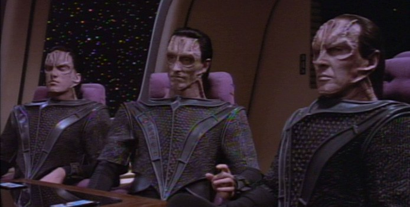
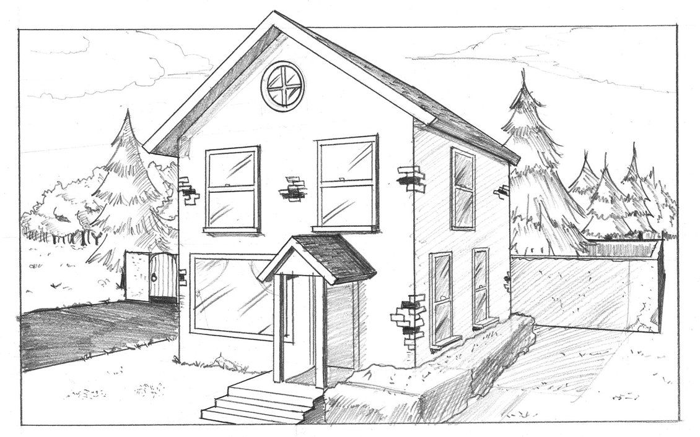

Space Shooter is a local 2D co-op top-down shooter which involves a fleet of starships who must team
up to help transport the vulcan peace negotiator Mr Spock to Romulus to help broker a peace treaty with
Starfleet and the Romulan empire. Featuring up to 2 player local co-op, you won't have to fight the
Cardassians and the Ferengi alone! Each player can chose their own spaceship with unique abilities and weapons
Controls
Up to 2 players can play at once in local co-op, where both players use the keyboard.
Player 1 uses the W, A, S, D keys to move and Spacebar to attack in the direction they are facing.
Player 2 uses the Arrow keys to move, NumPad 0 to attack.
Gameplay
To win the game the players must keep Mr Spock safe and get him to Romulus on time to broker the peace
treaty. The Cardassian Union and the Ferengi Alliance will try to stop you from reaching Romulus and try to attempt to
thwart any negotiations between the Federation and the Romulan empire. If you defeat the enemies, you
will be help to bring everlasting peace to the galaxy.

Art and Visual Design
The art style for this game is
Level Design
The level design topology for this game is linear, such that the players must traverse from a start to a finish avoiding obstacles along the way.

Technical Design
This game has been developed using JavaScript with the Phaser 3 game framework. This allows game mechanics and features to be implemented into a website generated with HTML and CSS.
As such the JetBrains Webstorm development environment was used to bring these systems together, providing an efficient workflow for implementing the game foundations and structure.